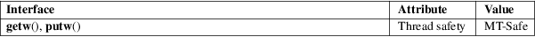

getw, putw − input and output of words (ints)
Standard C library (libc, −lc)
#include <stdio.h>
int
getw(FILE *stream);
int putw(int w, FILE
*stream);
Feature Test Macro Requirements for glibc (see feature_test_macros(7)):
getw(),
putw():
Since glibc 2.3.3:
_XOPEN_SOURCE && ! (_POSIX_C_SOURCE >= 200112L)
|| /* glibc >= 2.19: */ _DEFAULT_SOURCE
|| /* glibc <= 2.19: */ _BSD_SOURCE || _SVID_SOURCE
Before glibc 2.3.3:
_SVID_SOURCE || _BSD_SOURCE || _XOPEN_SOURCE
getw() reads a word (that is, an int) from stream. It’s provided for compatibility with SVr4. We recommend you use fread(3) instead.
putw() writes the word w (that is, an int) to stream. It is provided for compatibility with SVr4, but we recommend you use fwrite(3) instead.
Normally, getw() returns the word read, and putw() returns 0. On error, they return EOF.
For an explanation of the terms used in this section, see attributes(7).

None.
SVr4, SUSv2.
The value returned on error is also a legitimate data value. ferror(3) can be used to distinguish between the two cases.
ferror(3), fread(3), fwrite(3), getc(3), putc(3)